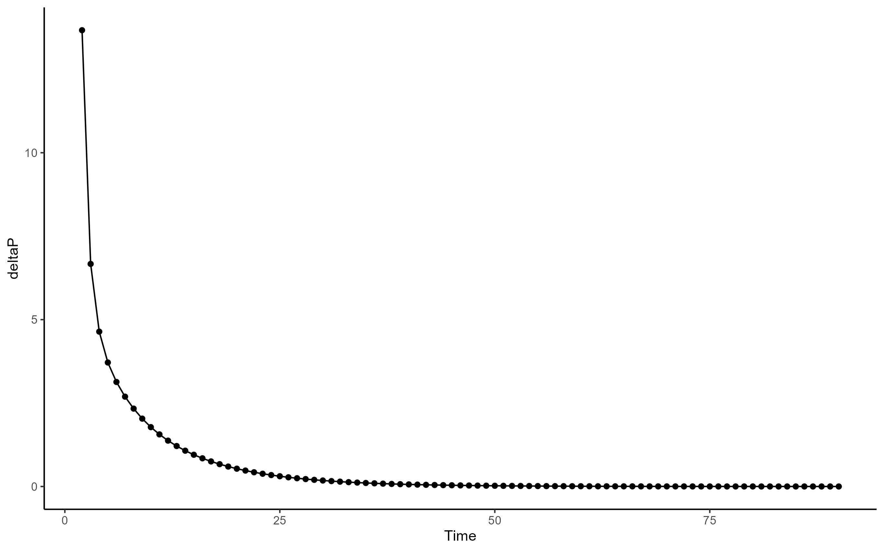
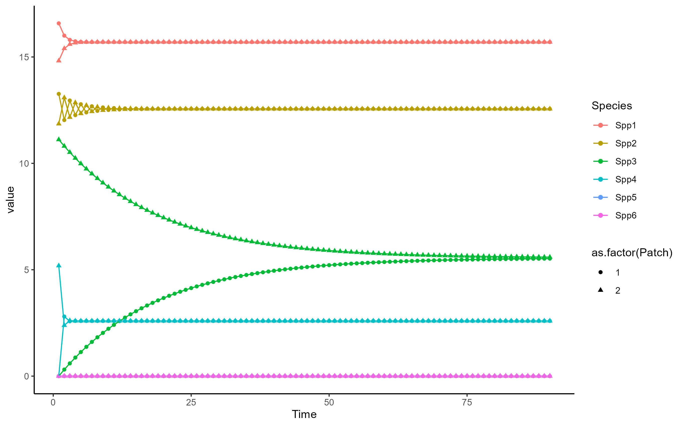

#setting up meta-community parameters
num_patches <- 2 #number of patches in metacommunity
num_spp <- 6 #number of POSSIBLE spp in metacommunity
N <- 100 #number of metacommunity simulations to run
meta_comm1 <- data.frame(matrix(NA, nrow = num_patches, ncol = num_spp))
S <- c(0.83, #PREG
0.62, #TGRAN
0.14, #TTOR
NA, #ABOR
0.12, #RCAT
0.64) #RDRAY
S[4] <- runif(n = 1, min = S[5], max = S[3])
#an array of probability values for the occurence of each spp
#what if I over thought this, and I can just assign an occupancy probability?
K <- c(20,16,15,7,4,2) #this is just an example, but k is the abundance at each rank (i think?)
max_abund <- 65 # a somewhat arbitrarily decided upon max abundanceReport04.04.24
Hello Brittany and Mark!
I am SO excited to bring you an update on this project. I have been working on addressing the following questions: Are the initial rank abundances chosen the same as rank abundances when the system is at equilibrium? And if not when does the system reach equilibrium and what are the abundances then? I have worked on a simulation to test this. I’m not going to bury the lead at the bottom: the answer to me seems to be that, no the system is not at equilibrium. Additionally, when the system reaches equilibrium seems to depend on species initial abundance + richness.
I have a lot of thoughts on next steps. For example, I kept dispersal constant and did not include a connectivity parameter in this simulation. If we deem it necessary, we could test whether dispersal rates and connectivity will impact how long it takes to reach equilibrium.
So, let’s talk for a second about forming the communities. I want to move forward with the use of a saturated model. To do this, I pulled an example equation from Mihaljevic et al. (2014) supplemental information. However, before I did that I also had to setup some initial parameters. In this report I used a 2 patch, 6 species framework. I simulated 100 possible metacommunities. I established S (occupancy probability), K (INITIAL rank abundance) and max abundance. Note that K and max abundance are somewhat arbitrary so I would be open to some discussion on those.
With these numbers we can then run the simulation to determine presence + abundance of each species. To do this, I used a for{} loop to run through all 100 simulated communities. I had to create a list of lists for this. Then, to start determining abundance I had to determine how many species were present so I took a random sample between 1:6 (represented as alpha in the code below). then I created a logarithmic relationship between abundance and species richness. The rest of the code uses Mihaljevic et al. (2014) ’s formulas. I won’t go into that here but would be happy to talk about this more.
meta_comm_list <- vector("list",N)
beta_list <- vector("list", N)
nestedness_list <- vector("list", N)
for(n in 1:N){
meta_comm <- vector("list", length = num_patches)
#data.frame(matrix(NA, nrow = num_patches, ncol = num_spp)) #create metacom
for(c in 1:num_patches){
alpha <- as.numeric(sample(1:6, size = 1, replace = T))
#need to create a relationship between species richness and abundance
a <- 10
b <- 4
error <- rnorm(length(alpha), mean = 0, sd = 1)
abundance <- a*log(b*alpha)+error
R <- alpha
KCOM <- max_abund/(1+3*exp(-0.05*(R)))
KS <- KCOM/abundance
meta_comm[[c]] <- if(abundance >= KCOM){
c(K[1:alpha]*KS,rep(0, num_spp - alpha))} else{
c(K[1:alpha],rep(0, num_spp - alpha))
}
}
meta_comm_list[[n]] <- meta_comm
}The key questions then are does this result in a saturated model of abundance for \(\alpha\) and \(\gamma\) (regional abundance). The answer: they do!
[,1] [,2] [,3] [,4] [,5] [,6]
[1,] 16.57976 13.26381 0.00000 0.000000 0 0
[2,] 14.82008 11.85607 11.11506 5.187029 0 0[1] 45.221

Okay, so I’ve shown that the communities and meta-communities follow a saturated plot. The next question is when the meta-communities reach equilibrium. In order to test this, I did a simulation over a 90 day breeding season (Time = 90). Then, for each meta-community at each time period I established \(\Delta\)P, or the change in abundance of each species in each patch. I then recorded whether the \(\sum \Delta\)P was below a critical threshold (I chose 0.01 somewhat arbitrarily). If \(\sum \Delta\)P was below that threshold, that indicated that the meta-community had reached equilibrium. I provide the code below for you to review as well as a table of the first 6 meta-communities showing when they reached equilibrium.
Time <- 90 #assume a 90 day breeding season
phi <- runif(6)# Need to establish dispersal metric. May need to determine more realistic values (see notes
# from meeting with mark + brittany on 03/28/25)
meta_comm_change <- data.frame(meta_com = 1:length(meta_comm_list), time = NA)
for(c in 1:nrow(meta_comm_change)){
meta_comm <- meta_comm_list[[c]]
meta_comm_df <- data.frame(matrix(unlist(meta_comm), nrow = num_patches, ncol = num_spp, byrow = T))
for(t in 1:Time) {
deltaP <- data.frame(matrix(data = NA, nrow = num_patches, ncol = num_spp))
for (i in 1:num_patches) {
for(j in 1:num_spp) {
other_patch <- as.numeric(meta_comm_df[-i,])
deltaP[i,j] <- phi[[j]]*other_patch[[j]] - phi[[j]]*meta_comm_df[i,j]
}
}
meta_comm_change[c,2] <- if(sum(abs(deltaP)) > 0.01){
#if deltaP is > 0 then the system is not yet at equil.
t} else{
next}
new_abund <- meta_comm_df + deltaP
meta_comm_df <- new_abund
}
}
gt(head(meta_comm_change))| meta_com | time |
|---|---|
| 1 | 56 |
| 2 | 49 |
| 3 | 47 |
| 4 | 21 |
| 5 | 46 |
| 6 | 59 |
I then went a step further. As an example. I plotted the simulation of the first metacommunity over time, so visualize when it reaches equilibrium. According to our table, you see that it should reach equilibrium around t = 56.


So, if you look at the first plot, you see that we are in fact able to reach an equilibrium! the change in abundance for each species becomes effectively 0. However, there is an issue I would like to point out. The second graph shows that as meta-communities approach equilibrium the populations become homogenous. this could be an issue, as a key goal of this project is to understand how the difference in communities effects \(R_{0L}\) . I have some thoughts on this. My first thought is that we could use this as an opportunity. If we were to do a time simulation and measure \(R_{0L}\) at each time step we could show how homogenizing the community effects disease risk in addition to assessing the importance of \(\beta\) diversity. We could even measure \(\beta\) at each step! This is the route that I’m leaning toward. However, we could also play with the connectivity of patches to see if creating heterogeneous connectivity results in a equilibrium state where patches still differ in abundance.
These are my thoughts for the moment. Super excited at this progress and would love to hear your thoughts!
-Reed
References
Mihaljevic, Joseph R., Maxwell B. Joseph, Sarah A. Orlofske, and Sara H. Paull. 2014. “The Scaling of Host Density with Richness Affects the Direction, Shape, and Detectability of Diversity-Disease Relationships.” Edited by Delmiro Fernandez-Reyes. PLoS ONE 9 (5): e97812. https://doi.org/10.1371/journal.pone.0097812.